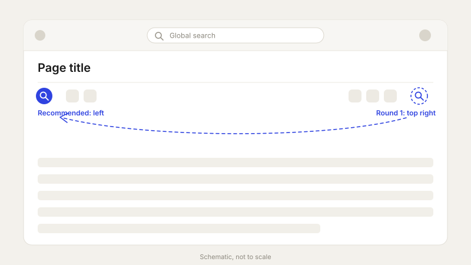
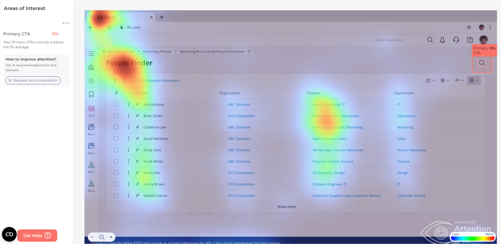
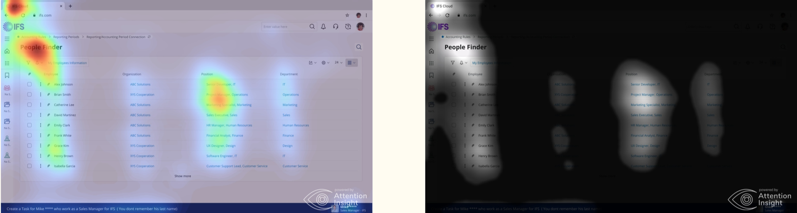
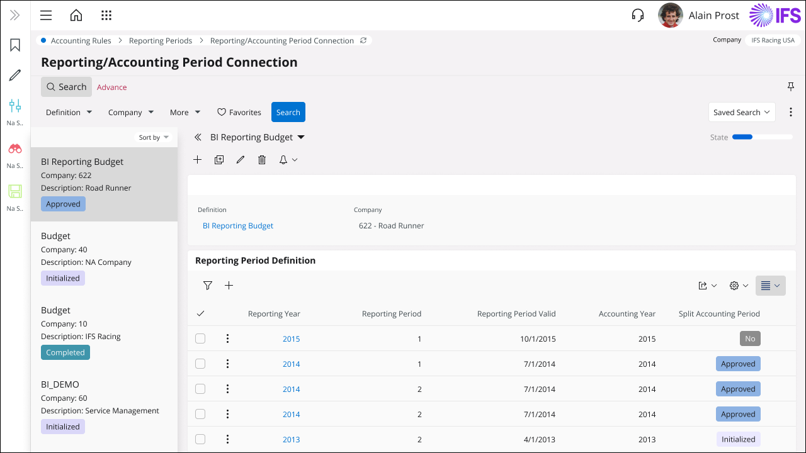

IFS Cloud · Research case study
Where should page search live?
A relocation had already shipped, after the usual research, prototyping and validation. Then new evidence changed the answer. This is how I re-opened it, and what the research said.

01 · ProblemA relocation had shipped, and it felt wrong
IFS Cloud has two kinds of search. Global search lives in the application's top bar. Page search looks inside the page you are on: a list of projects, a table of documents, a record.
Page search had recently been moved to a new position. That change had gone through the design team's usual process: research, prototype, user validation.
At the same time I was working on introducing global search to IFS Cloud, and that forced me to reconsider where both searches sit in the application. When I looked closely at the relocated page search, it felt odd. There were several reasons, mostly to do with the page's information architecture. So I started the research again.
What I wanted to find out
- Can people find the relocated page search, and how long does it take them?
- Does its new position fit how people scan and use these pages?
- How do people think about global search and page search side by side?
The earlier round of research had pointed to the right-hand side. I wanted to test that again, with a different set of people and more than one method, so that no single test decided it.
02 · ResearchThree studies, so no single test decided it
The relocation had already passed through research once. Re-opening it meant different people and more than one method, each answering the same question from a different angle.
Three studies, one question
| Round 1 | Round 2 | Heuristic review | |
|---|---|---|---|
| Who | 5 external users, some new to IFS Cloud, some long-time IFS Applications users | 10 internal users | Me, against IFS's design heuristics and design-system checklist |
| How | Moderated, recorded sessions with think-aloud tasks on the relocated design | Remote survey with a first-click test, comparing the two placements | Checked the proposal against the heuristics and the design-system standards |
| What it gave me | Quantified findings, an adaptation story, personas, a journey map | Click heatmaps, flow diagrams, and a view on whether the button was understood | A structured check that the change was simple, visible and consistent |
I also ran predicted-attention heatmaps of the page as a quantitative cross-check on where the eye lands first.
Round 1: what people did
Five external users completed tasks on the relocated design while thinking aloud. The sample is small, so I treated the numbers as directional and spent most of the time on the reasons behind them.
A side finding pointed the same way: 5 of 5 struggled to find where to create a task, which is done with the bell icon. Icon-only controls carry a learning cost.
Adaptation is real, and so is the cost of the first encounter
One participant met the relocated search three times. The first time, as someone who is not an expert user, she struggled for about a minute to find it. The second time she knew where to look and took under a minute. The third time she reached it within a second.
She still said she would keep it on the left. Her words: “Of course you will be used to it, but if I would give my opinion, I would keep it on the left side.” Users expected to adapt to a placement they did not prefer, which is a different thing from it being the right placement.
What the sessions added up to
- Mixed reactions to the new position. Some users preferred the familiar left side from earlier versions, and said adaptation was possible with time.
- Two searches, two jobs. Global search felt more efficient for broad queries; page search was useful for specific, context-dependent ones. Several people wanted a unified experience like modern web apps.
- A clear preference for global search. Page search was valued for context but seen as less versatile.
- Relearning is costly for occasional users, and some confused the roles of global and page search.
- Requests: shared, saved searches (available in older versions), more intuitive document classification, and global search integrated with context-specific search.
“I would prefer to keep it on the left side, but then of course if you know it's on the right side, you get used to it.”
“I find it difficult to find documents in IFS because I don't do it every day, so I have to relearn it.”
“People are getting very used to universal search on their phones and on their computer, so the more similar to that we can make it, the better it is for most people.”
03 · SynthesisFour personas, one journey, and eight reasons it felt wrong
I grouped participants into four personas along two lines: how long they had used IFS, and how often. A new active user, a new active user who knows the older IFS Applications, an experienced active user, and an experienced passive user. They gave the team something concrete to design and test against.
The journey below follows the experienced passive user: five years with IFS Applications, using the system intermittently. It is where the relocation costs the most, because there is little habit to fall back on and the old muscle memory points to the wrong place.
Journey of an experienced, occasional user
| Row | Initial encounter | Recognition | Decision to use | Interaction | Results review | Navigation and task completion | Reflection | Adaptation and feedback |
|---|---|---|---|---|---|---|---|---|
| Actions | Navigates to a page and notices the search in its new location, potentially on the right. | Recognises the search icon and understands its purpose. Asks friends and colleagues for recommendations. | Decides to search for something on the current page, and chooses page search over global search, understanding it is contextual. | Clicks the search icon and adds a query related to the page content. | Scans the results, judges their relevance, and may refine the query. | Clicks a relevant record, navigates to the information on the page, and uses it to finish the task. | Considers how well page search worked for the need at hand. | Over time becomes more used to the new placement and how page search works. |
| Feeling | Curious, potentially confusedMay be momentarily confused if expecting it on the left. | ConfusedFamiliar but slightly uncertain. Might compare it with the global search bar at the top. | Contemplative, hopeful | Focused, slightly anxious | Potentially satisfied or frustrated | Expectant, curiousAccomplished or disappointed by the end. | EvaluativeCompares with global search or earlier versions of the software. | Gradually confidentEngaged, or potentially resigned or frustrated. |
| Opportunities |
|
|
|
|
|
|
Not yet identified. |
|
Why it felt wrong: eight reasons
The findings kept pointing the same way, so I looked for the mechanisms behind them. Almost all of them come down to one thing: the icon had moved away from where people expect to find it, and from where they naturally look.
Expectancy violation
People build mental models from their experience of the application. Moving an element from where they expect it breaks the model, causes confusion and raises cognitive load.
F-pattern reading
Users scan in an F shape: top left, across, then down the left side. An icon on the right sits outside that path and is easier to overlook.
Change blindness
People can fail to notice a change in what they see, especially when attention is elsewhere. Someone used to finding search on the left may simply not see it in its new place.
Habit and muscle memory
Regular users' habits are tied to the left. Breaking them takes conscious effort and costs efficiency and patience in the short term.
Visual hierarchy
Elements on the right can read as less important or secondary, which lowers the perceived importance of search.
Cognitive load
There is already a learning curve with the new interface. Another change adds to the mental effort of using the system.
Left-side bias
In left-to-right reading cultures, attention skews left. Important navigation is expected there, including key functions like search.
Consistency with other systems
People are used to universal search on their devices. A search on the opposite side to the one they know can feel inconsistent with their wider digital experience.
A cross-check: where the eye actually goes
To test the left-bias and F-pattern ideas, I ran predicted-attention maps on the relocated design (Attention Insight). They predict where attention lands on a first glance; they are a model, not eye tracking. Two things stood out.
- Attention goes more to the left of the page than the right.
- The relocated search icon, at the top right, scored 0% predicted attention, below the tool's 5% average for a primary action. That fits one participant needing about a minute to find it.


04 · ValidationRound 2 and a heuristic review tested the alternative
The first round told me the relocation had a discoverability cost. It could not tell me whether an alternative did better. So I ran a second round with internal users, using a remote survey with a first-click test. It compared the two placements and looked at how global search and page search work together. The task was concrete: search for all projects in “Closed” status.
- 10 of 10 participants found the search button quickly.
- A few said the button was not self-explanatory, because it opens a search pane. That is a labelling and affordance problem, separate from placement.
Heuristic review
I also checked the proposal against IFS's design heuristics and the design-system checklist. The aim was to meet IFS Design System standards and to communicate the design clearly to engineering. Two of the heuristics stood out:
- “The design is as simple as possible.” Moving page search to the left puts a commonly used function in a more intuitive place. First-click time dropped from over a minute to seconds.
- “The user always knows what is going on.” A more visible icon gives immediate feedback when someone interacts with the page.
05 · DecisionKeep the right-hand position, or change the placement?
The two rounds had shown different results, so the question became which recommendation the combined evidence could support.
06 · Final designSearch moves left, under the page title
Design was the smaller part of this project, but it is where the evidence lands. The revised page search does three things:
- It sits on the left, directly under the page title, where people look first.
- It is easy to discover. The button carries a text label as well as the icon, with the same styling as the other search controls, which answers the round-two feedback that an icon alone was not self-explanatory.
- It stays quiet until you need it. The button opens a pane. Filters, saved searches and an advanced mode live inside it.

The rest of the recommendations sit around the design. User education means interactive tutorials, subtle guidance and a searchable knowledge base of search tips. Personalisation means tailoring results by role and permissions, and letting people save and share searches, which older versions allowed and which the Saved Search menu makes room for. For the longer term I suggested a unified search experience: clear visual distinctions between global and page search, and possibly a smart search that picks the most relevant scope from the query.
07 · ResultWhere it stands
What I took from it
- A decision that shipped can still be wrong, and the right response to a doubt is to test it, not to defend it.
- Two rounds disagreed, so I combined external and internal users with a heuristic review, and kept the recommendation paired with further validation.
- Small samples are directional. The reasons behind the numbers carried more weight than the numbers.